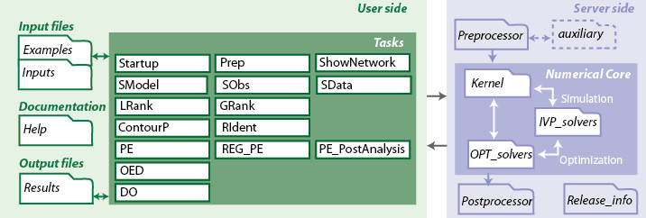

Getting started
Contents
Toolbox structure
AMIGO2 is organized in three main modules: the pre-processor, the numerical kernel and the post-processor. Given a problem definition (inputs structure), AMIGO_Prep preprocesses user input data, generates necessary directories and code (MATLAB or C mexfiles). The different numerical modules are then called by the user to perform the desired task(s).
Code organization
This general structure correlates to the following folder and code organization:

Help folder keeps all toolbox related documentation.
Examples folder keeps a number of implemented examples that user may consider as templates to implement new problems.
Inputs folder keeps new inputs created by users.
Kernel folder keeps all numerical functions, NLP solvers and IVP solvers.
Postprocessor folder keeps all matlab functions to generate reports, structures and figures.
Preprocessor folder keeps all matlab functions to generate matlab or C code, to mex files when required and to generate necessary paths. This folder keeps also the defaults for all inputs, user may modify public defaults in: AMIGO_public_defaults.m
Release_info folder contains the AMIGO_release_info.m with all details about previous and current releases.
Results folder keeps all results. User may create other results folders.
Installation of basic and enhanced modes
Make sure that AMIGO2 folder is copied on a path without spaces for full functionality. Open a MATLAB session, move to the path AMIGO2 path and run AMIGO_Startup for the basic mode:
AMIGO_Startup;
----> Adding paths to current MATLAB session.... ----> To use C models run mex -setup and choose an valid compiler. Alternatively use GNUMEX. ----> Startup finished....
For enhanced mode with C the following is required:
How to input problems in AMIGO
AMIGO is programmed making use of the so called Matlab structures. Structures are multidimensional Matlab arrays with elements called fields. These fields may be of any data type (arrays, matrices, strings of characters, etc.) and may be easily classified in subsets, therefore being quite comfortable for managing all input and output information. See: How to input problems in AMIGO.
AMIGO Tasks
- AMIGO_Prep: processes and checks the inputs and creates the neccessary binary code.
- AMIGO_ShowNetwork: links to CytoScape to show the model network
- AMIGO_SModel: simulates the model and plots the states at the specified time points.
- AMIGO_SObs: simulates the model and plots the observables at the specified time points.
- AMIGO_SData: simulates the model and plots the predictions together with the measured data. Also creates pseudo-data.
- AMIGO_PE: performs the estimation of the unknown model parameters
- AMIGO_REG_PE: solves the parameter estimation problem with regularization techniques
- AMIGO_PE_PostAnalysis: performs several fit analysis after parameter estimation
- AMIGO_LRank: computes the local ranking of the model parameters
- AMIGO_GRank: computes the local ranking of the model parameters
- AMIGO_RIdent: computes the robust identifiability of the model parameters
- AMIGO_ContourP: creates contour plots of the cost function
- AMIGO_OED: solves optimal experimental design problems
- AMIGO_DO: solves single- and multi-objective dynamic optimization problems